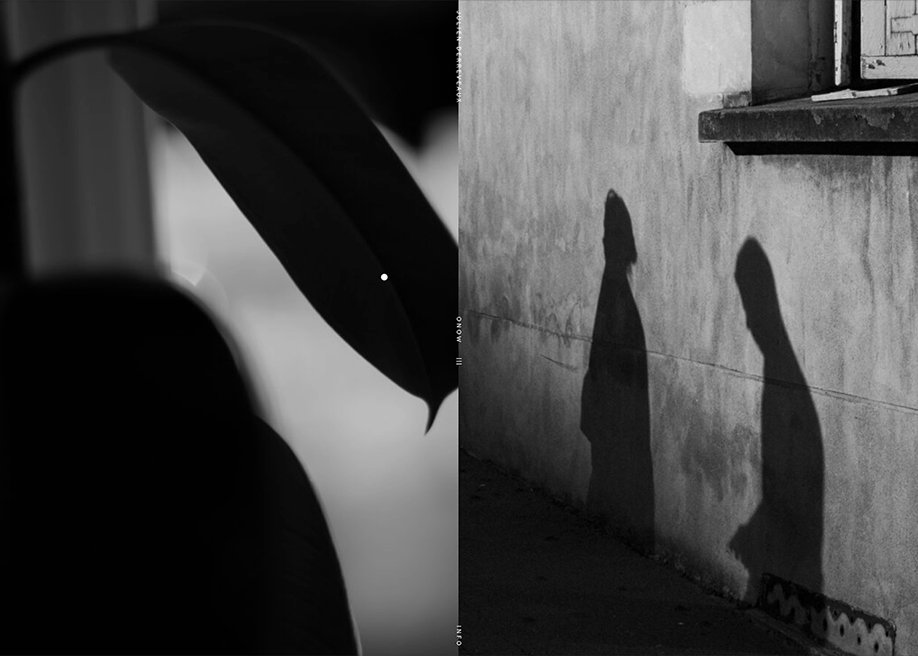

julienderreveaux.co
I really like this website because it's very linear and minimalistic. Also, the small circle mouse gives a charm to it. I think it's a very nice way to show off photography pictures. I also like how usually the navigation bar is on top but on this website it's in the middle.